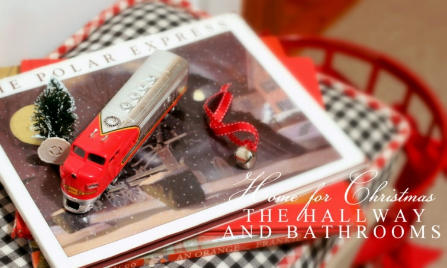
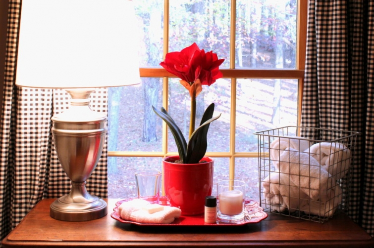
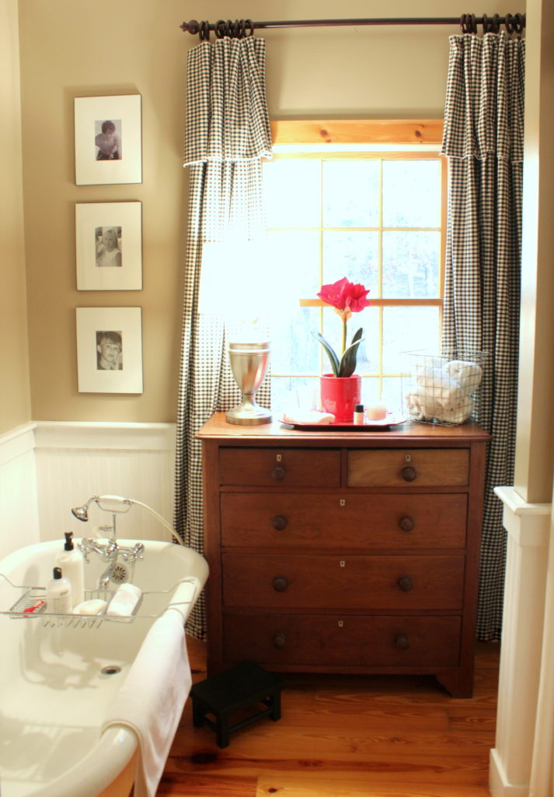

.png)
.PNG)
.PNG)
.PNG)
.PNG)
.PNG)
.JPG)
.JPG)
.PNG)
.PNG)


Welcome back elves! I am popping back in with another quick post on holiday decorating today. We got the master bedroom all dressed up for Christmas the last time we were together, and today we are going to do the same for three small spaces here. So if you are ready, let’s get started!
We are moving our decorating party on into the master bathroom by adding a pretty red tray and a simple amaryllis to the top of the dresser.

I know that doesn’t sound like much, but I really prefer the decorations in these areas to be understated. Are you thinking we need a garland up there on the drapes or perhaps a wreath in the window? Just wait, I will add more to the other part of the bathroom. Okay?
Now do you remember that I painted the interior of the bathroom’s antique cupboard yellow a few months ago? It looked like this:

Don’t you think it needs to be red for Christmas? Good thing I saved those pieces of beadboard that my husband painted red last year. 🙂 Within 2 minutes our yellow backed cupboard changes into red.
What a difference that makes! We’ll wrap the bars of soap in gold foil and put them back in the jar on the top shelf. Then we will add some greenery to the top and a couple of red bows….
And now the master bathroom is dressed for the season. 🙂
Now let’s move to the kids’ bathroom. It has a shower curtain and window panels made from black and white gingham. To add some contrast, let’s add some green in there. (I bet you thought I was going to say red. 🙂 )
A green Christmas tree in a jar and a gift tied with green ribbon are two easy touches.
The chalkboard was black, but I painted it green for another spot of color in the room.
And the same goes for the wicker in there. It had all been black, but I spray painted it green. That’s it for the kids’ bath, so we can check it off our list. 🙂
Now for today’s last holiday decorating project…the little bedroom hallway. We’ll hang a wreath in the window first by tying it to the drapery rod with some wide red grosgrain ribbon.
Last month I made a new cushion for the hallway bench with leftover scraps of black and white gingham, and I recycled the red cording that was around the blue plaid one there. For our Christmas decorating by the bench, we get the red metal basket out of the attic, weave a red ribbon through it again like last year, and fill it with our collection of children’s Christmas books.
A couple of books on top of the bench along with a toy train make it an even more merry spot. 🙂
And that finishes our work for today.
Three more spaces are now ready for Christmas, and we will move on into our daughter’s bedroom the next time we get together here.
Thank you for coming along with me today! I hope you have a fun and productive weekend in store on this first official weekend of December. Did any of you happen to see this movie when it opened last night?
I’m thinking it might be a good Christmas one to see this weekend. 🙂
Until next time…


.PNG)
Nice touches for the baths. Love the red beadboard change out. Clever!
I just adore your home!! So cozy, warm, welcoming, homey….love, love, love!!
Hi!!! Love everything-as usual. You are such an inspiration to so many people– so happy you are still blogging!!! Two questions– would love to learn how to write on chalkboards, etc. like you do. Is there a particular place you went to to learn the different techniques? Also, what brand/color green is that paint that you used to spray the wicker green? Thanks Kelly, once again, always love it when I see you have posted something new!!!
———————————————————————-
Good morning Ronda!
Thank you for your sweet comments. As far as writing goes, I just doodled and looked at examples (back then) in books to copy. Now I frequently study posters and fonts online to help me get a start on a lettering project. If you have not seen this post it may better answer this question: http://www.talkofthehouse.com/a-lettering-post-for-you/ There is also a part 2 here: http://www.talkofthehouse.com/lettering-part-2-chalkboard-tutorial/
The paint I used to spray the wicker is Moss Point Green by Olympic (sold at Lowes.) It does not come in a spray can. It is a mixed paint that I put in the sprayer that we own.
Thank you for reading the post and taking the time to comment Ronda.
Happy New Year!
Kelly
Kelly,
I love your Christmas touches every where but I especially love the children’s bathroom! Your red looks lovely but green is always my favorite and I love that it is not a traditional “Christmas green.” The green is so inviting and clean. Thanks for sharing! Take care.
Dawn
Another great holiday blog! I especially loved the idea of the red wire basket filled with cherished children’s Christmas books. As a retired English teacher, I have many of them. Christmas is a good time to dust off some of those old favorites. Reading them brings back joyful memories of friends and family. Isn’t that really what we celebrate during the Christmas season? Merry Christmas to you and your family!
Girl, you are soooo clever!!! Love it all…
Kelly,
It all looks wonderful.I love the red bead board, yes, it was “needed”. 🙂
xo,
Karen
I love your homey touches! Your place is darling. I noticed in one of the bathroom pics that you have a metal floor grate. Did you know that you can get them in wood to match your floor? Or in old-fashioned metal designs? We had the very same ones as you until we put in hardwood floors a few years back – and grates to match. You would love them!
Thanks for sharing a little bit of joy through your design work.
Great to hear that someone else out there stills sew their own
soft coverings. : ) Beautiful little cushion. Merry Christmas
Absolutely love all of the holiday decorating you are doing in your home! Your posts are always inspiring and a joy to read. Have a wonderful Sunday and week ahead.
Oh my gosh, I love your cheerful enthusiasm and taste and style!!!
Mary Ann
Kelly, You’re inspiring me once again! I love your bench cushion in the hall. Have a wonderful time with your daughter! Julia
ps I’ve just noticed the little red pumps under the stool in your hallway …soooo. Cute! 🙂 did they belong to one of your children?
Rosemary
Oh Kelly! Absolute perfection! I really do mean it ..you just seem to have the knack of making simple things look so beautiful and just perfect for the season.
I really must try to look at my house as though through your eyes and see what I can do to make it look that extra bit special.
Thank you once again, for sharing your home with us all.
I hope all your Christmas preparations are going well and you’re having a wonderful week with your daughter. I especially like her “Christmas bedroom” in the pictures you’ve shown us previously.
Take care …
Rosemary
I love how you spread Christmas throughout your house. 🙂 Great idea with the red bead board! I love that shade of green in the other bathroom too. Ha, I’ve been “repainting” stuff too. I painted a bucket (it was spray painted rust from years ago) for a little tree for my bedroom! 🙂 I always get our children’s Christmas books out too. 🙂 I want to see the movie, because it was filmed an hour and a half from here and one of the executive producers is from our town! I need to ask his sister-in-law at church tomorrow where it is showing. 😀
Oh, my goodness, you always do such a lovely job of decorating! One of my favorite things is the way you can change out the back of your hutch in the bathroom. I thought of doing that to our built-in bookcases, but never did, so yours is the first time I’ve actually seen it done. I also like how simply you’ve embellished each area. I feel like some of my garlands are a little too thick and I think I like yours better. Thanks so much for the continuing inspiration! Merry Christmas to you and yours, Kelly!!
I wish you would come to my house and decorate my house! You always inspire me to use more red! Lovely!
Hi, Kelly,
I so appreciate all the effort you put into creating this blog. I know it takes time to take before and after pictures, create all the lovely decor,and send them in a timely way to us when you could be doing other things. But–your blog is a lovely gift that we all enjoy. It is a delight to see your name in our email and know we will be transported to your warm, welcoming home. In addition to the pure pleasure of looking at all your creative ideas, we are inspired to bring beauty and cheer to our own homes. Thank you!
—————————————————————–
I am so glad you think of the blog as a gift. It is definitely what I feel led to make it. Thank you for your always thoughtful and encouraging comments. Your words are a gift to me! 🙂
Kelly
Your bench cushion turned out great! Love the subtle touches here and there.
Kelly: I always enjoy visiting your blog. No matter the season, you decorate in such a way that there is attention to detail (wrapping soaps, putting train on Polar Express, etc.) which I think makes your home even more comfortable and welcoming. Nothing is “in your face”; the subtleness is what makes it very special.
Another wake up post that is delightful! Simply beautiful! I think I will keep things simple too —just a touch here and there that says “peace, joy, love.” Have been saddened by the wildfires and terrible weather this week– we have much to be thankful for and hope you are enjoying the simple things of life. 💕🌲⛄️️🇺🇸😇
Thanks for sharing the movie trailer . . . the movie looks great. And, of course, all of your decorating ideas are great, too! Thank you for blogging!!!!!!
I love how you use such simple things like wrapped boxes, ribbon, and books to make everything so festive.
You always have the prettiest ideas! Love all the red!
Shelley
Really cute, love all the little touches that you do to add a bit of the holiday all around. Little red tennis shoes when you don’t have a little person around? I would never think of that!
You did motivate me – After 4 hours of work, I managed to get the tree up and lights on it – but that’s as far as I got! Have to say, in my defense, I used to work at a store that sold trees, and it was my job to decorate them (along with two other ladies). We were trained on the “proper” way to decorate them, so I have a problem not being so perfect with the whole thing. Each branch just so, lights wrapped along the branches and through the center, etc. At 62, I now just want to pay someone to do it for me, if only I could afford that!!! Will finish up today (I hope!) in between the regular chores I have.
Have a lovely weekend!
—————————————————————-
Whoa…I can see how that would steal the joy from decorating a tree. I do not like putting the lights on….wish someone else would do that for me. But I love everything else about decorating it. Once I get past the darn lights, I am happy. Wish I could have helped you with yours (after you did the lights perfectly of course. LOL) Oh, and I consider the tree a 1 day job, so if you got that done after a day of work, I think you did good! 🙂
Kelly
Kelly, I love the green you painted your black wicker with. Can you share the color of the paint with us? Your home looks so cozy and pretty! Merry Christmas!
——————————————————————-
Lynne, it was a mixed paint I put in my sprayer…not a spray can. It was Moss Point Green by Olympic sold at Lowes. But I did not like the smell of it…took several days for it to go away. The next time I need that green I am going to look for it in a different brand of paint.
Kelly
always delighted to see your posts. lovely!!
Thank you for sharing.
Kelly, Red is my favorite color and I love how you have used it in your home this Christmas. It is a color that just makes me happy.
As always, so inspiring. Thank you for sharing.
Wow, Kelly, your home is Christmas personified! I always am inspired by your decorating. (possibly because we love the same colors😄)
Won’t it be hard to leave your beautiful home? We are in the process of designing a new home and moving to another state to b e closer to family. I will miss my home and friends but am looking forward to new adventures! I hope 2017 brings you and your family wonderful adventures! Merry Christmas!
Always a delight! I Throughly enjoy all your decorative touches but am particularly smitten with the bench cushion. The red checked trim on the black and white cover is just too darn cute. I will have to remember that one!
Merry Christmas decorating Kelly!
Oh my word, Kelly, your attention to detail never fails to impress! Who but you would think to transform the back of your cupboard for the season! I love it! Everything is so pretty and I love the green chalkboard. Your beautiful handwriting makes it particularly special.